If location tracking or serial/batch tracking are enabled, additional fields are available in the job sheet entry window. For serialised items you must specify the location and/or serial/batch number when you make a stock requisition in a job.
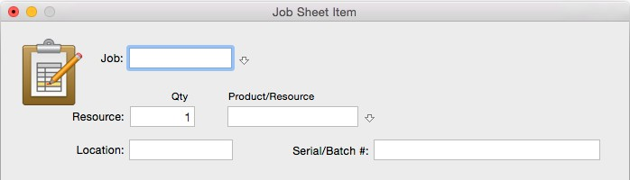
When requisitioning serialised items, you must specify the serial/batch number.
A serial/Batch number is also available in the Time Sheet entry window.
Stock transfer journals can be used to fix a variety of errors concerning serial numbers, batches and locations.
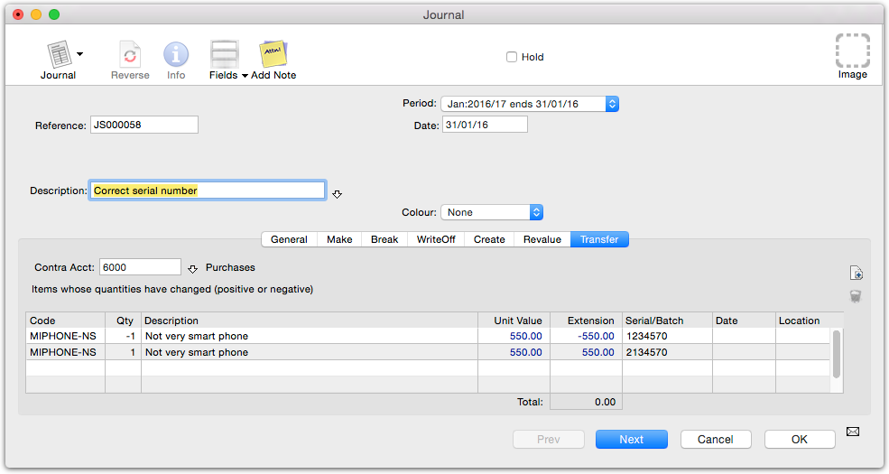
Stock transfer journal
To make a transfer journal:
toolbar button or press Ctrl-N/⌘-N
The Journal entry screen is displayed.
Click on the Transfer tab
The net dollar difference of the credits and debits created by the journal will be posted to this account, which would normally be some sort of expense account.
In practice, if you are transferring the same item but just correcting for an invalid location or serial/batch number, the journal will always have a net value of zero.
Type the quantity of the item to adjust in the Qty column
A negative quantity indicates that that many of the item is to be removed from stock; a positive quantity indicates that that quantity will be put into stock.
This is the serial/batch that will be removed (if Qty if negative) or added to stock.
This is the location from which the item will be removed from (if the Qty is negative) or put into stock.
If you are moving the same item between locations (or fixing a batch/serial number) the total of the journal should be zero (as no value is being created or lost). If however you have moved more items out of stock than in, then you are effectively doing a stock write-off (and conversely a stock creation if more items are coming in than going out). In this case the total of the journal will be non- zero, and the contra account will be debited (for a “stock creation”) or credited (for a “stock write-off”) by this value.
For example in the transaction below we are writing off 2 chrome widgets, and creating 3 bronze ones. The difference in value of these will be credited to the designated contra account (stock adjustments).
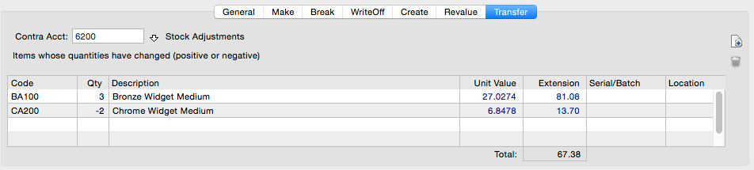
When you import transactions that for items that involve a serial/batch number or location, neither the imported serial/batch number nor the location is validated as part of the import (the assumption is that you have clean data coming in from the other system). For purchasing serialised items this is as expected, as the serial numbers will not exist. However for sales it is possible to sell a serial number that does not exist (this can be corrected if necessary with a Stock Transfer Journal). If a non-existent location is specified the stock will placed into the bogus location (and you will need to manually create the location in the “Stock Locations” validation list if you want to get it out again).
The order entry system allows you to enter sales and purchase orders, and quotes for customers. As goods or services are supplied, the orders are turned into invoices, with any goods outstanding remaining on backorder.
When you make a purchase of goods or services and where there is a delay between ordering the items and the receipt of those items, the details of the purchase should be recorded as a purchase order.
When the items are finally delivered, you should check the pricing against the original order, and enter the quantity actually received. When you “process” this, MoneyWorks will automatically create a creditor invoice, and if necessary update your stock. Any items not delivered will be held as back-ordered items.
If, as sometimes happens, the items are received before you get the invoice, you can receipt the items into stock and process the invoice later.
To enter a purchase order:
A new transaction window will open.
If necessary set the transaction Type to Purchase Order Pressing Alt-Shift-8/Ctrl-Shift-8 is a keyboard shortcut for this. The Purchase Order entry window will be displayed.
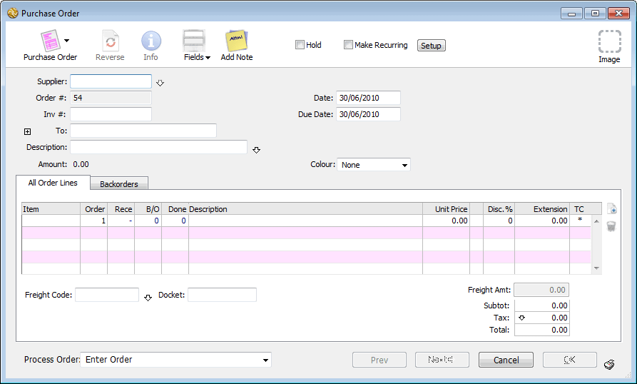
The supplier name details will be entered automatically, as will the Purchase Order number.
If you do not enter a valid supplier code, the choices list will be displayed when you tab out of the field. Use this to find the correct code or to create a new one.
If the goods or services are not to be delivered to your normal address, you can change the delivery address details
Enter an optional description for the order
Depending on the design of your purchase order form, this may appear as an annotation on your printed purchase order.
Press ctrl-tab (Mac) or ctrl-` (Win) to move to the product code field of the purchase order detail line
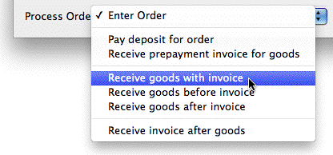
Specifying product detailsYou need to record details of each item that you are purchasing. This is done in the detail lines of the purchase order. You need to record at least the quantity and code of each product required. In addition it is a good idea to put on the expected purchase price—the product description and price details are entered automatically for you when you enter the product code.
This is your own internal product code or the item’s barcode—the Supplier’s Product Code (if it exists) will be printed on the purchase order.
If you enter an invalid code (or leave the code blank), the product choices window will be displayed. You can choose the product from this list, or click
The options in this are discussed later.
The printer icon will be displayed on the Next and OK buttons, indicating that the purchase order will be printed immediately one of these buttons is clicked.
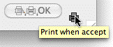
Set the Printer icon to print an order form when you save the order.
the New button to record details of a new product.
The product description and price will be entered automatically for you. The purchase price is taken from the product record, and (unless it has been altered) is the last price paid for the item.
Enter the quantity you are ordering in the Order field
If the expected purchase price is different from the last recorded buy price, tab to the price field and enter the new price
Press return to add another detail line
If freight is to be included as part of the purchase price, you should specify the expected freight charge in the freight area. In some situations you won’t know this, so enter it when the goods invoice arrives.
Further processing of the order (for example, recording a deposit) can be activated at this point by using the Process Order pop-up menu at the bottom- left of the entry screen.
If you had elected to print this purchase order, the Print Form window will be displayed. Ensure you set the form to the desired purchase order, then print it.
If you clicked the Next button, a new purchase order entry screen will be displayed, otherwise the purchase order list will be shown (with the current purchase order highlighted).
If you clicked Cancel, the purchase order is not saved.
Note: As of version 9.1.7, MoneyWorks users in Singapore are able to transmit the purchase order directly to their supplier using eInvoicing. The purchase order will automatically appear in the supplier's purchase order list.
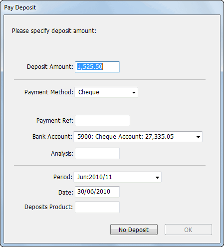
You will be prompted for the deposit details when the order is saved:When the supplier sends an invoice for the goods, it will probably also be an eInvoice, and appear in your invoice list when you retrieve your eInvoices. Because the invoice has not been generated in the normal manner of processing order receipts discussed below, the order will remain unprocessed. Use Purchase Order Matching to
manage completion of the order and to highlight discrepencies between the original order and the invoice.
If the order is incomplete (there are backordered or unbilled items) it will stay in the Purchase Orders view. Once all the goods ordered have been received and billed, the order will move to the Bought view.
When you re-open the order, you will see that the previously receipted quantities of goods have been transferred to the Done column. The remaining backorder quantities show in the B/O column, and for your convenience are also entered into the Receive column for the next shipment you receive.
Note: Purchase orders are not accounting transactions, and hence they can be modified or deleted at (almost) any time.
If you need to pay a deposit or prepayment invoice with the order, you can record the details on the order. This amount is held with the order, and is credited against the final payment.
A deposit is a payment that will be made immediately; a prepayment invoice will be recorded as an invoice to be paid later. In either case, you will be prompted to enter the details of the deposit or invoice when the order is saved.
These are used to make the payment transaction.
This will be appended to the bottom of the order to adjust the total when the goods are received. See A Note on Deposits.
Click OK
A new payment transaction is created, and the amount of the deposit is recorded in the order2.
Note: The payment transaction is not linked to the order. If you cancel the payment the order will still record the original deposit. You can reduce (or remove) the deposit by entering a negative deposit amount.
You will be prompted for the details of the invoice when the order is saved:
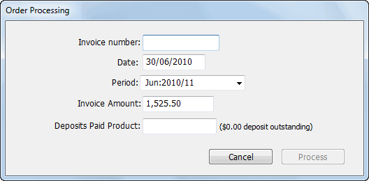
These are used to make the invoice transaction. The invoice number is also recorded in the Invoice # field of the originating purchase order.
This will be appended to the bottom of the order to adjust the total when the goods are received. See A Note on Deposits.
A new purchase invoice transaction is created and posted, and the amount of the invoice is recorded in the order. Note that this invoice is only loosely attached to the order: if you cancel the invoice the deposit amount recorded on the order will not alter. You can reduce the prepayment invoice amount by entering a negative invoice amount in another Prepayment invoice.
When the goods or services that you ordered arrive, you need to check the quantities and prices (if known) against the original purchase order, and mark those items as having been received.
As of MoneyWorks 9.1, it is possible to do receipt goods directly into an iPhone/ iPad using MoneyWorksGo and the Remote Warehouse MoneyWorks Service. The order in MoneyWorks is automatically updated with the receipted quantities (and serial/batch numbers if appropriate).
There are three possible scenarios for receiving inventoried goods: they might come with the invoice, before the invoice, or after the invoice. You determine which by setting the Process Order pop-up menu. By definition, non-inventoried items cannot be brought into stock, and hence cannot be received before the invoice.
This is the usual case, and means you can enter the quantity received and the correct price; MoneyWorks will generate a creditor invoice (or payment if required) for the goods, which will be brought into stock when the invoice is posted.
Enter the quantity received and the pricing from the invoice
This determines the quantity and the value of goods that will be brought into stock.
Click the OK (or Next) button
You will be prompted for the invoice number, date and period
A purchase invoice will be generated which, when posted, will bring the goods into stock.
In this situation you would have recorded the total amount paid as a prepayment invoice or deposit, as described previously. You would then receipt the goods through the originating purchase order.
Enter the quantities actually received into the received column.
You should not need to alter the prices, as these will have been entered when the invoice was processed —see Paying a Deposit with Order.
However if these have changed for some reason, you can alter them.
The Order Processing window will be displayed
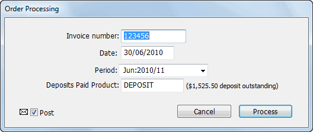
The invoice number defaults to that in the Invoice # field of the purchase order. This will be set automatically to the number of the last prepayment invoice. The Deposit product is used to reduce the outstanding amount of the invoice by the value of any previously paid deposits or prepayment invoices. You should use the same Deposit product as used when the original prepayment was made. See A Note on Deposits.
MoneyWorks will create a special "Goods Received" purchase invoice to bring the items into stock. The previous payment(s) will be netted off the invoice, which will normally leave the invoice at zero. However if you have altered the pricing, and this is the final shipment, there may be a balance to pay (or a credit to claim). This will appear in your normal accounts payable.
In this case you can receipt any inventoried items into stock at the expected price. When the invoice subsequently arrives, it can be recorded (using the Receive Invoice after Goods process option in the original purchase order), and MoneyWorks will re-adjust the value of the receipted items. Note that when the goods are received, it is important that your estimated price is realistic (in particular, an estimated buy price of zero is generally a bad idea as it will grossly distort your margin).
When you receive goods prior to the invoice, MoneyWorks will generate a stock creation journal to bring the items into stock. You will need to specify “the other side” of this journal, which will normally be a current liability (e.g. “Unbilled Inventory”; this is because in accepting the stock you have incurred a liability to the supplier). Note that you cannot receipt non-inventoried items before they are invoiced.
Set the Process Order pop-up menu to Receive goods before invoice
Enter the quantities actually received into the received column
Check the unit price for each item
It is important that these are close to the expected purchase price, as this is the value at which the items will be brought into stock if the current stock on hand is zero. If there is any existing stock on hand, the items will be brought in at the existing average unit value5.
Click the OK (or Next) button
You will be prompted for the "Unbilled Inventory" account to use, and the date and period of the stock creation journal.
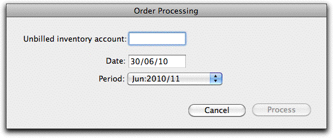
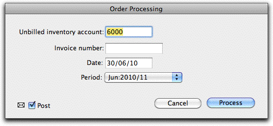
The "Unbilled Inventory" account should be a current liability.
A stock creation journal will be created to put the items into stock.
When you are subsequently invoiced for the goods, use the "Receive Invoice after Goods" option.
Note: If you are using the job system and receive goods before invoice, the items will go into stock and not flow automatically into the jobs. You will need to manually requisition them.
Only use this when you have received the goods in advance of the invoice (i.e. Receive Goods Before Invoice above).
Enter the quantity and the value of the items on the invoice
The quantity must be less than the already received amount. If it is greater, you will need to process the additional goods received as a Receive Goods before Invoice prior to processing this.
The Receive Invoice window will be displayed.
You cannot change the invoice amount, as that has been determined by the previous screen.
MoneyWorks will create an invoice for the items specified. The previously receipted items will be re-processed through the stock system at the invoiced value (i.e. they will be taken out of stock at the current average unit value and put back into stock at the correct invoiced value). If this is the final invoice (i.e. there are no backorders, and all items that were previously receipted have been invoiced), the order will be marked as being complete.
Note on final invoice: When the final invoice for the order is raised, MoneyWorks will check to see if there is a residual balance in the unbilled inventory account due to this order. This can arise when the average unit value of the goods has changed since the stock was initial receipted and the processing of the final invoice. If a residual balance is detected MoneyWorks will create an additional general journal (with a description “Correct for changed valuations on PO xxx”) to move the residue from the unbilled inventory into the cost of sales account.
Note: If you are using job costing, the job column on the invoice will be blank, regardless of the setting in the original order. MoneyWorks assumes that you have already requisitioned the items for the job.
If freight has been charged on the shipment, you will need to enter the freight amount so it will be transferred to the final invoice.
In the Freight Code field, enter the product code for freight-in
Freight codes are special classes of products —see Ship Methods. Note that any GST/VAT/Tax Override on the Supplier Name is ignored: the tax is based on that of the Freight product.
If desired, record the docket number (or any other commentary) in the Docket field
Enter the (Tax exclusive) freight amount into the Freight Amt field
When you record a deposit on an order, MoneyWorks creates the appropriate receipt or invoice (for a sales order) or payment (for a purchase order), and also accumulates the deposit amount in the order itself.
When the goods are shipped/received, an additional line is added to the resultant invoice to reduce it by the deposit amount. Because orders are inherently “product” based, all transactions involving such deposits must use a “Deposit” product—you need to specify this the first time you make a deposit.
You can have different Deposit products for deposits you receive and deposits you make (or you can just use the one);
For deposits on Sales Orders, the Deposit product is one that you sell. In the Income account when selling field of the product, you should specify a current liability account (such as Deposits Held);
For deposits on Purchase Orders, you must buy the Deposit product. Use a current asset account (such as Deposits Paid) for the Cost-of-goods Expense Account;
Do not stock the deposit product;
Multiple deposits can be made on an order (just open the order and set the Process Order pop-up to Pay deposit for order). If the additional deposit is for a negative amount, the accumulated deposit is effectively reduced.
If you need to cancel the deposit you must put through a new negative deposit, as the deposit amount is stored on the order. Cancelling the deposit transaction will not clear this.
You cannot delete an order that has a deposit balance.
When the order is processed and an invoice (or receipt/payment) is created that takes up the deposit, or part of the deposit, the orderDeposit field of the invoice is set to the amount of the deposit. The amount displayed in the Gross field will be the total processed less the deposit. If you want to see the sale/purchase amount excluding the deposit, customise the list with a calculated column to show gross+orderDeposit .
Landing costs are the costs incurred in transporting an item from the place of purchase to your premises. These might include freight, insurance, duties and more.
Landing costs should be included in the value of the stock; e.g. you might pay
$100 to your supplier for an item, but it also costs a further $50 in freight. In this case the inventoried value of your item should be $150, not the $100 purchase price.
Once you have determined your landing costs for an order, it is relatively simple to spread them over your initial purchase order or supplier invoice. To do this we basically increase the total of each line item of the invoice by the additional landing costs (by using a negative discount), and we add a single offsetting line to the invoice that encompasses the landing cost.
For this to work, we need to create a new "product" to enter the landing costs; for example "LANDED". We will buy and sell this product (but will not stock it), and it will be associated with the landed costs expense account in your chart of accounts.
We have a purchase order with the following 2 items in it:
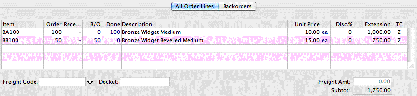
The total of the order is $1,750 (plus tax if applicable).
Assume that the landing costs (freight, duty etc) come to $200 (in practice these won't normally be known until the goods have arrived). Now $200 is 11.43% of the actual cost of the goods (200/1750 x 100), so we need to increase the value of each item by 11.43% when it comes into stock.
To do this we simply apply a NEGATIVE DISCOUNT of 11.43% to each line of the order, then add a new line to subtract the total landing cost so that the value of the order remains the same. The new line is entered with a quantity of minus one, and with the unit price set to that of the total landing cost (with no discount). Thus we would have:
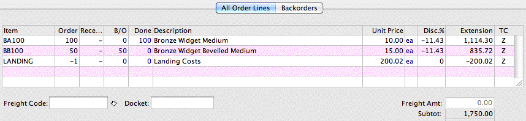
Note that because of accumulated rounding error using the discount, we might have to adjust the value of the LANDING up or down a few cents (in this case to 200.02) to ensure the value of the order stays at the original order value. So in this example the order still has a value of $1750.
When this order is processed (and the resultant invoice posted), the buy price of the stock items will be set to the Unit Price (so that BA100 will have a buy price of $10), but each item will go into inventory at a value of 11.43% higher than the buy price (i.e. each of the new BA100 items will have a stock value of 11.143, which neatly incorporates the landing cost).
The actual invoice(s) from the shipping/custom agents for the freight, duty etc, get entered separately into MoneyWorks.You can code them to the LANDING product, or to more specific general ledger codes (which will be offset by the LANDING general ledger code).
Tip: You can have MoneyWorks calculate the discount for you by entering the formula directly into the discount field (for MoneyWorks to recognise a formula it must start with an “=”). In the example above we could have entered:
=-200/1750*100
into the discount field, and when we tabbed out MoneyWorks would have evaluated it and substituted the result as -11.4286. We could then have copied and pasted that value into the remaining discount fields.
Note: If your supplier is represented in MoneyWorks in one currency, and the landed costs in another, you need to convert the landed costs entered into the Purchase Order/Invoice into the currency of the Purchase Order/ Invoice.